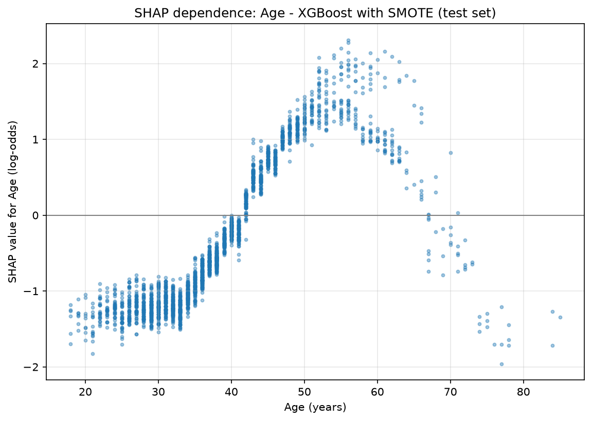
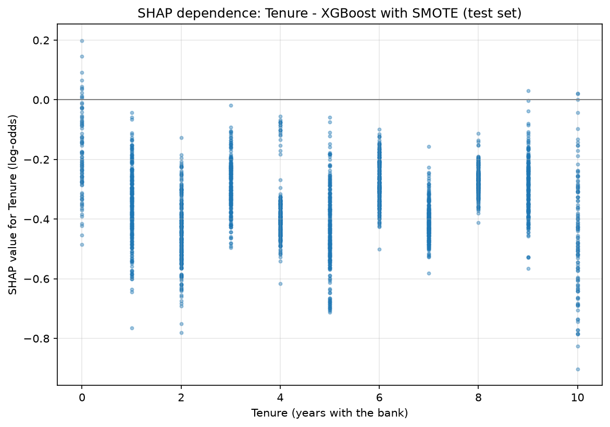

Executive Summary
In this retail-bank dataset, 20.4% of 10,000 customers have already churned. Replacing a lost customer costs more than keeping one, so the goal is to flag the high-risk ones while there is still time to act. Four classifiers are trained and tuned under one protocol, and XGBoost ranks churners best on the held-out test set. This is a cross-sectional snapshot: it answers who churns, not when.
Four drivers
- Age. The fifties band churns at 56%, the highest of any age band; risk climbs from 40 and falls back after 65. The median churner is about 45, the median retained customer about 35.
- Product count. Three-product customers churn at 82.7% and all 60 four-product customers left; two products is safest at 7.6%.
- Activity. Inactive customers churn at 26.9% against 14.3% for active ones — nearly double, and a behavior the bank can see early.
- Geography. German customers churn at 32.4%, roughly double France at 16.2% and Spain at 16.7%.
Results at a glance
| Item | Result |
|---|---|
| Customers analyzed | 10,000 (2,037 churned, 20.4%) |
| Final model | XGBoost + SMOTE, tuned by 5-fold grid search on ROC-AUC |
| Ranking quality (test set) | ROC-AUC 0.876 (95% CI [0.858, 0.892]), PR-AUC 0.727 |
| Churners caught | 87% at the tuned threshold 0.20, versus 61% at 0.5 |
| Break-even cost ratio | C* = 3.7 (tuned threshold wins once a miss costs more than 3.7 wasted offers) |
| Drivers | Age, activity, product count, geography |
Data & Churn by Group
The data comes from the public Kaggle Churn Modeling dataset, 10,000 rows by 14 columns, with no missing values. The target records whether a customer has churned, at 20.4% (2,037 customers); row number, customer id, and surname are identifiers, dropped before modeling. The four-to-one imbalance settles two choices: training needs resampling or class weighting, and evaluation leans on PR-AUC and recall — a model that always predicts "stays" is already 79.6% accurate while catching no churner at all. The data is split 75/25 with stratification (random_state=42), and the encoders and scaler are fit on the training set only, keeping the evaluation data out of every modeling decision.


The boxplots and countplots compare shapes; the table below adds the exact churn rate and group size behind each driver, giving every claim in the findings its n.
| Group | Category | Customers | Churn rate |
|---|---|---|---|
| Geography | Germany | 2,509 | 32.4% |
| Geography | France / Spain | 5,014 / 2,477 | 16.2% / 16.7% |
| Activity | Inactive / Active | 4,849 / 5,151 | 26.9% / 14.3% |
| Products | 1 / 2 | 5,084 / 4,590 | 27.7% / 7.6% |
| Products | 3 / 4 | 266 / 60 | 82.7% / 100% |
| Age band | 40–49 / 50–59 / 60–92 | 2,618 / 869 / 526 | 30.8% / 56.0% / 27.9% |
| Gender | Female / Male | 4,543 / 5,457 | 25.1% / 16.5% |
Which variable splits the two groups most sharply? Product count. Two products is the safe configuration; more than four in five three-product customers churn, and all 60 four-product customers left — though the 3-plus group is only 3.3% of the base, so the rate is extreme and the volume small. The age profile is non-monotonic: the fifties band at 56.0% is the peak, not "older is riskier."


Comparing Four Models
The three baseline models (logistic regression, KNN, random forest) are first read at their untuned cross-validation ROC-AUC, then tuned alongside XGBoost under one protocol: SMOTE sits inside the cross-validation pipeline and touches only the training folds, never the validation folds, keeping the CV scores honest; GridSearchCV runs 5-fold, scored by ROC-AUC. At a 20% imbalance, accuracy rewards models that ignore the minority; ROC-AUC measures how well a model ranks churners ahead of non-churners, independent of any threshold.
| Model | Accuracy | Precision | Recall | F1 | ROC-AUC | PR-AUC |
|---|---|---|---|---|---|---|
| XGBoost + SMOTE | 0.8544 | 0.6507 | 0.6149 | 0.6323 | 0.8757 | 0.7265 |
| Random forest | 0.8440 | 0.6042 | 0.6778 | 0.6389 | 0.8681 | 0.7002 |
| KNN | 0.7388 | 0.4184 | 0.7250 | 0.5306 | 0.8078 | 0.5277 |
| Logistic regression | 0.7160 | 0.3945 | 0.7387 | 0.5144 | 0.7900 | 0.4801 |
Accuracy flatters the majority class; precision, recall, and F1 describe the churn class at the default 0.5 threshold; ROC-AUC and PR-AUC measure threshold-free ranking quality, and PR-AUC is the stricter of the two because it concentrates on the 20% minority, where the no-skill baseline is about 0.20.


XGBoost is recommended: first on both ranking metrics, and monthly risk scoring rests on ranking quality. Logistic regression and KNN buy their higher recall by flagging loyal customers — at about 0.4 precision, six of every ten contacts are wasted. Random forest edges XGBoost on recall and F1 at 0.5, but a threshold can be adjusted after training and ranking quality cannot.


Class imbalance has two standard answers: SMOTE oversampling, or weighting the minority class. Swapping SMOTE for scale_pos_weight=3.91 in the same XGBoost grid leaves the two nearly tied: CV ROC-AUC 0.8579 vs 0.8568, test ROC-AUC 0.8711 vs 0.8757, test PR-AUC 0.7249 vs 0.7265. Every gap is far smaller than the confidence intervals in the next section, so the conclusions do not depend on SMOTE itself; the pipeline stays only because all downstream tuning and attribution build on it.
Setting the Threshold
The default 0.5 threshold treats both errors as equally costly, but they are not: a missed churner costs the whole relationship, a false alarm one retention offer. An F2 sweep scores each candidate threshold, weighting recall twice as heavily as precision. The threshold is selected on the training data alone: 5-fold cross-validation produces out-of-fold predicted probabilities on the training set, the F2 sweep runs on those, and the winning threshold is applied once to the test set — selecting on the test set would let the evaluation data leak into a modeling decision and overstate the operating point. The out-of-fold optimum is 0.20.
| Operating point | Threshold | Precision | Recall | F2 | Customers flagged |
|---|---|---|---|---|---|
| Default | 0.50 | 0.6507 | 0.6149 | 0.6218 | 481 |
| F2-optimal (chosen on training OOF) | 0.20 | 0.4070 | 0.8684 | 0.7079 | 1,086 |


At 0.20 the model catches 442 of the 509 test-set churners instead of about 313, and the contact list grows from 481 to 1,086. The test-set F2 (0.708) is close to the training estimate (0.696), so the operating point chosen on the training folds transfers to unseen data. Whether that trade pays off depends on offer cost against customer value; when campaign capacity is fixed, the threshold can sit anywhere on the precision-recall curve — which is exactly why the model with the strongest ranking is chosen.
Break-even Analysis
F2 is only a proxy for "weight recall more"; the real objective is cost. The data has no cost fields (customer value, offer cost, campaign success rate), so nothing is invented — this section assumes one quantity, the cost ratio C, the cost of a missed churner divided by the cost of a wasted retention offer, and compares only the two errors. The 0.5 threshold produces 168 false alarms and 196 misses; the 0.20 threshold produces 644 false alarms and 67 misses. Solving for the break-even gives C* = 3.7: the tuned threshold has lower total error cost whenever missing a churner costs more than 3.7 times a wasted offer. No currency figure is assumed, so the conclusion holds for any bank whose cost ratio clears that bar.

In a retail bank, a churned relationship is worth many times a single retention offer, so any realistic ratio is far above 3.7 and the aggressive operating point pays off. No absolute currency figure is assumed, so the conclusion holds for any bank clearing that ratio. (SMOTE distorts probability calibration, so the operating threshold is set by empirical sweep rather than the textbook 1/(1+C) formula.)
The headline numbers are point estimates on one test set of 2,500 customers. Resampling it 2,000 times with replacement, without refitting the model, gives intervals that reflect test-set sampling noise only: ROC-AUC 0.876 [0.858, 0.892]; PR-AUC 0.727 [0.690, 0.762]; recall at 0.20 is 0.868 [0.838, 0.897]; precision 0.407 [0.377, 0.436]. The recall interval is narrow — "about 87% of churners caught" does not rest on one lucky split — but the ROC-AUC interval contains random forest's point estimate of 0.868. XGBoost leads on both ranking metrics, yet the lead falls inside test-set noise, so the model choice rests on ranking first on both metrics plus threshold flexibility, not on a statistically separated gap.
Why Customers Leave: SHAP Attribution
A risk score tells the retention team who to call, not what to say. SHAP assigns each feature a signed contribution to each prediction, showing customer by customer which features push the prediction up and which push it down. To rule out single-model artifacts, the SHAP ranking is cross-checked against the random forest's impurity importances and XGBoost's gain importances; the top five agree across all three, with age and product count in the top two.


The shape of age. The dependence plot gives the headline driver a shape: the contribution of age crosses zero around 40, peaks between 50 and 60 at up to +2 log-odds, and declines after 65, turning negative near 67. That matches the non-monotonic profile in the group table (30.8% in the forties, 56.0% in the fifties, 27.9% past 60) — the model has learned the same curve from the data, not a simple "older is riskier" rule.


Reconciling tenure. In the boxplots tenure barely separates churners from non-churners, yet it ranks fourth by mean absolute SHAP. The dependence plot shows why: the model assigns each customer a small, almost uniformly protective contribution (none beyond about −0.9), with no strong trend across the 0-to-10-year range; those small values on every customer add up in a mean-of-absolute-values ranking. Tenure ranks as a stabilizer, not a driver, and the four-driver story stands.
Two customers, explained. The force plots take the two extremes of the test set by predicted probability. The highest-risk customer (churn probability 0.998) combines every major driver at once: 4 products, an age well above average, inactive, an above-average balance, and located in Germany; only a short tenure pulls the other way, far too weakly to matter — customers with this profile belong at the top of the call list, and the conversation should be about simplifying the product portfolio. The lowest-risk customer (churn probability 0.005) is the mirror image: 2 products, young, active, zero balance, high credit score.


Acting on the Findings
The four drivers agree across EDA, the three importance views, and SHAP, so the risk profile is specific: customers past 40 who have gone inactive, more so when they hold a large balance or bank in Germany. The findings turn into four actions.
| Initiative | What to do | Basis in the analysis |
|---|---|---|
| Monthly risk scoring | Score every customer with XGBoost at the tuned threshold; give service teams each customer's top three SHAP factors before a call. | Best ranking quality of the four candidates (ROC-AUC 0.876, 95% CI [0.858, 0.892]); 87% of churners caught at the tuned threshold. |
| Re-engagement campaign | Target inactive customers in the medium-to-high risk band with a bonus rate, a fee waiver, or a consultation. | Inactive customers churn at 26.9% vs 14.3% for active; inactivity is a top-three SHAP driver. |
| Portfolio review | Contact customers holding three or more products for a simplification review; reward sales on combinations that fit the customer, not product count. | Product count ranks second across all three importance views; three products churn at 82.7%, four at 100%. |
| German market review | Run competitor analysis and collect feedback from German customers and branch staff. | Germany churns at 32.4%, roughly double France and Spain. |
The F2-optimal threshold of 0.20, selected on the training folds, catches 87% of churners on the test set (61% at the default) at a precision of 41%. It beats the default on total error cost whenever missing a churner costs more than 3.7 times a wasted offer. The right operating point follows from offer cost, campaign capacity, and customer value, and should be revisited when those change.
Next steps & reproducibility
Next: A/B-test the retention offers against a control group to measure the realized effect on churn; retrain quarterly and recheck the threshold when campaign economics change; push the risk score and SHAP factors into the CRM so branch staff can see them. The notebook runs on one seed (42) and reproduces end-to-end locally (uv run jupyter nbconvert --to notebook --execute), writing figures to figures/.